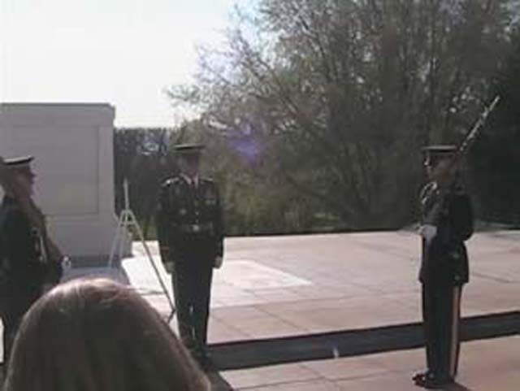
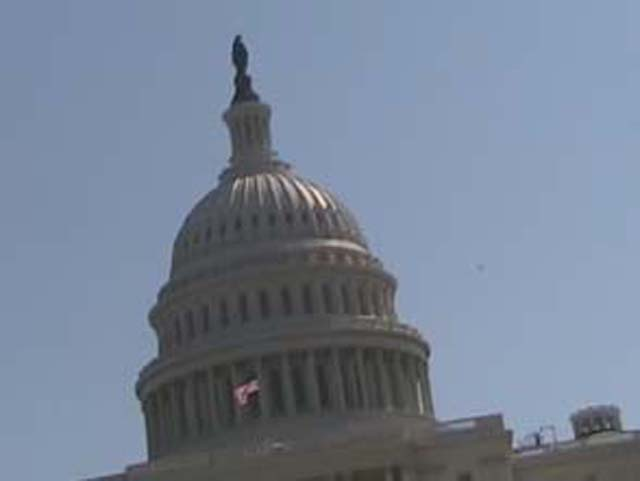
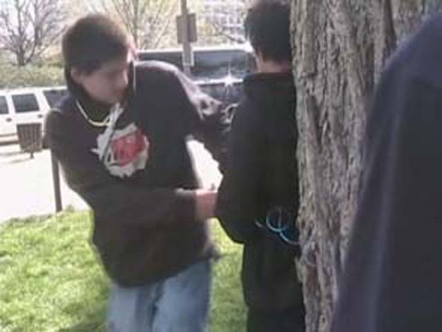

DC/Williamsberg/Knotts Photo TRs
Day 4
More DC!
Today we went up to the Arlington cemetary. It was pretty big! There were seriously acres of
Tombstones. The ceremony they did there was weird! It was just weird. We then went on to see the
Capital Building. It was nice, but part was under construction. In DC, most of the sites are
closed for remodeling or something! It also seems alot like Europe, with museums, big crowded sites
and lots of tourists with lots of hidden parts. The only real differences are that there are less people and I got a French powered coaster credit! It may have been a powered coaster, but
it beat the crap out of the powered coaster Andrew and I rode at the Ventura County Fair!
(No Andrew, the one in Paris isn't a credit eithter.) Anyways, back to DC. We then went to the
Air & Space and Natural History museams. Meh, they were ok. Oh yes, we left our mark in DC by
wrapping Isaacs slinkey around a tree! While driving to Williamsberg, we Paramounts Kings Domain
*sniff* Thats alot of credits gone, onto todays photos.

Heres the weird ceremony at Arlington Cemetary.

Here is the Capitol Building in all its glory!
 Here we are at the Museam of natrul History!
Here we are at the Museam of natrul History!

Nick and Justin are leaving the mark of Incrediblecoasters with Gram in it!
 Thats 11 credits gone.
Thats 11 credits gone.
Day 5
Home